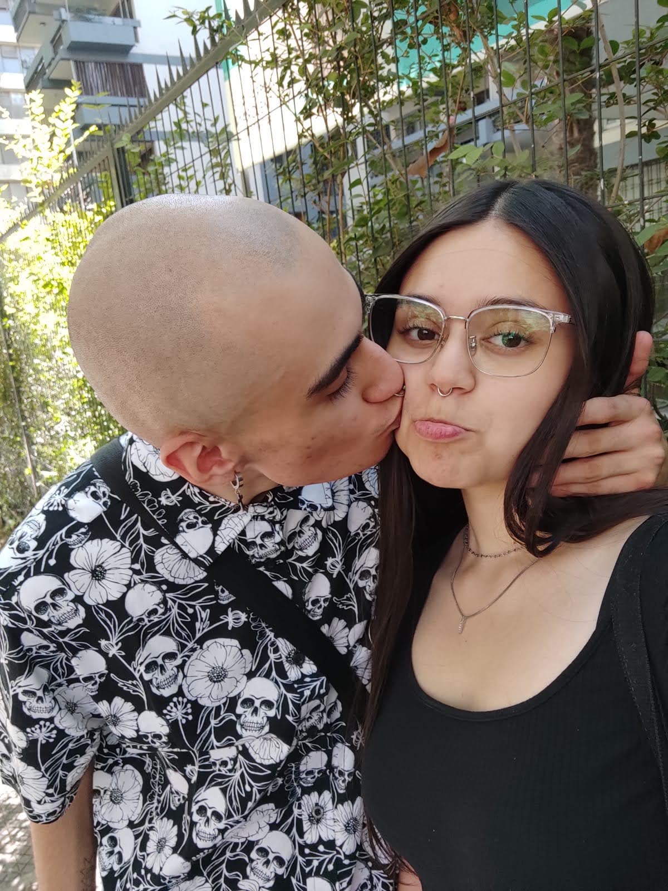

BIENVENIDA A NUESTRO BARCO
huellas y marcas
PRIMER MES

Creeme ver estas fotos y recordar ese sentimiento tan lindo de nuestro primer mes juntos es algo que a mi jamas se me olvidara de la mente ,es como un tatuaje sin tinta , recuerdo que ese dia el viaje no nos salio como queriamos el jardin japones estaba cerrado pero algo que no estaba cerrado era nuestro amor y las ganas de seguir estando juntos , te regale tus primeras flores , te regale tu primer peluche de mi para ti , se que estas de acuerdo conmigo pero es un momento tan lindo y bello de los 2 que no hay palabras para explicarlo.
Tome esta foto porque me parecio tierna tu carita hermosa
A ESTE MES LE DEDICO ESTA CANCION
SEGUNDO MES
Este segundo mes, fue extraño no pudimos seguir con nuestra rutina de primer mes porque me enferme pero de todos modos te agradezco que hayas estado ahi conmigo en un momento en donde la pase demasiado mal con mi operacion y lo unico que me levanto los dias aburridos en el hospital haciendo nada fue estando contigo
EEEEE ES OPCIONAL NO MASSSS
TERCER MES
Fue muy bonito vernos despues de mis vacciones, recuerdo que te dije que ibamos hacer algo despues de volver a santiago y fue un momento unico donde tuvimos lindas fotitos juntos que disfrutamos lo que compramos con la tematica dibujada , te grabe para mis historias y juro que me encanta ver tu carita feliz sabiendo que estas disfrutando despues de no vernos por unos dias , me alegra tanto verte feliz y sinceramente son mis fotos favoritas
A ESTE MES LE DEDICO ESTA CANCION
CUARTO MES
Volvimos a la rutina comiendo unas sushiburger , no sabes lo feliz que fue verte y disfrutar de una nueva comida que justamente se estaba haciendo aca , no estaba muy bueno pero decidimos seguir y disfrutando el dia (me lleve una bebida gratis) conversamos harto , reimos harto , yo en ese momento ya decia que esto va durar mucho porque nunca pense que una mujer tan estupenda conmigo llegaria a estar cuatro meses conmigo de verdad me sentia priviligado
A ESTE MES LE DEDICO ESTA CANCION
QUINTO MES

Sinceramente uno de los cumplemes que mas me han marcado no se si a ti tambien pero fue tan pero tan HERMOSO estar haciendo algo juntos como lo que es cocinarnos unas ricas hamburgesas, nos quedaron fabulosas, con distitnos tipos , me alegraba ese dia poder disfrutar de una linda noche con la mujer de mi vida viendo peliculas o una serie , amanecer viendo tu carita , intercambiando energias y preguntandote como dormiste bebe??? , eres lo mas hermoso de este mundo
A ESTE MES LE DEDICO ESTA CANCION
SEXTO MES
Repetimos nuestra cita del mes anterior pero mucho mejor que antes , no recuerdo bien despues hazme el favor de decirme pero creo que las hamburgesas le agregamos algo y fue la mejor noche de mi vida viendo monitos de la infancia con una hamburgesas que cuando nos miramos dijimos "WAUWW ESTA DEMASIADO RICA" esas miradas solo lo tenemos nosotros y esa conexion tambien , ademas agregar que tambien comimos otras cositas ricas y que de verdad me marca mucho estos momentos de pura felicidad
A ESTE MES LE DEDICO ESTA CANCION
SEPTIMO MES
Un dia breve pero mas enamorados que nunca , de la mano juntos disfrutando y viendo cada pieza de lego, nos sacamos hartas fotitos lo unico que falto fue comer algo pero no le demos menos merito que fue un lindo dia para estar juntos y compartiendo otras experiencias,otras salidas que en verdad me enorgullecen haberlas vivido contigo y estando ahi contigo me da mil años de vida
A ESTE MES LE DEDICO ESTA CANCION
OCTAVO MES
Unos dias de los que me senti conexion contigo donde me senti que estaba mas cerca de ti mas que nada en el mundo,comimos rico y nos comimos rico , disfrutamos mucho viendo ese museo en donde pasamos por todos lados viendo animales y cosas antiguas (pasame el video que hicimos jjss es hermoso) creo que en ningun momento me arrepiento de haber disfrutado tantas cosas ese dia contigo ademas nuevamente hicimos estos panoramas que han sido perfectos
A ESTE MES LE DEDICO ESTA CANCION
NOVENO MES
Un mesesito lindo, hubieron problemas tecnicos pero despues de comer sus ricos ramen todod paso y fua una locura de dia compartiendo rico conversando puras tonteras y mas adelante visitando un lugar muy lindo como de paises de europa.Me hace sentir muy bien que te haya hecho feliz las flores que te di y los calcetines que se que los estas usando ahora , eres lo mejor de mi vida entera mi amor
A ESTE MES LE DEDICO ESTA CANCION
DECIMO MES
PROXIMAMENTE
atenta el 15 de septiembre pondre algo jiji
UN AÑO
ACA VA SER UNA LOCURA CREEME